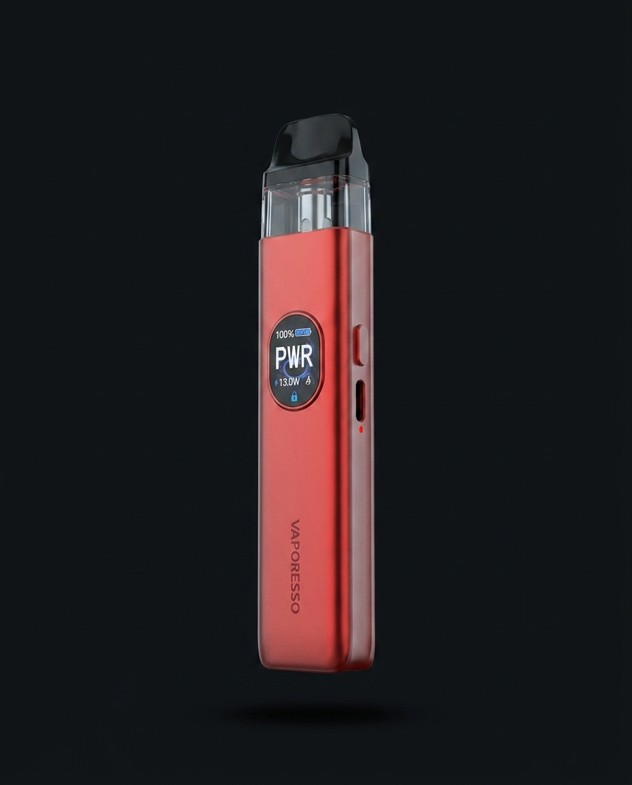
Vaporesso
XROS 5
Klasyk linii XROS w standardowym rozmiarze — dobry punkt wyjścia, jeśli nie wiesz jeszcze, co lubisz.
Pod · MTLKatalog · Zestawy startowe
Dwanaście zestawów pod MTL od pięciu marek — od kieszonkowych nano po modele z wyświetlaczem. Każdy trafia do Ciebie z zamontowaną grzałką, gotowy do pierwszego naładowania. Model i moc liquidu dobieramy razem, przy ladzie.
Marki w ofercie
5
Vaporesso, OXVA, Lost Vape, SMOK, Aspire.
Grzałka MTL
0,8–1,2 Ω
Do soli 20 mg i klasycznego liquidu 6–18 mg.
W pudełku
4 elementy
Urządzenie, grzałka, kabel USB-C, instrukcja.
Dostępność
Od ręki
Sklep stacjonarny, Pl. Wilsona 4.
Wszystkie modele poniżej stoją na półce w sklepie. Rozmiar i wygląd widać na zdjęciach — dobór do stylu palenia i budżetu robimy na miejscu.

Klasyk linii XROS w standardowym rozmiarze — dobry punkt wyjścia, jeśli nie wiesz jeszcze, co lubisz.
Pod · MTL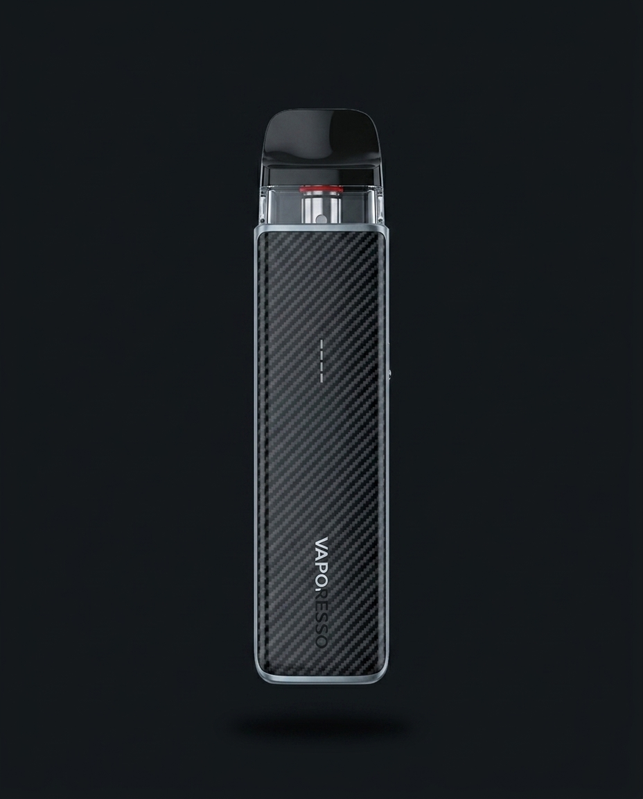
Mniejsza obudowa tej samej linii — łatwiej mieści się w dłoni i kieszeni, kosztem rzadszego ładowania.
Pod · MTL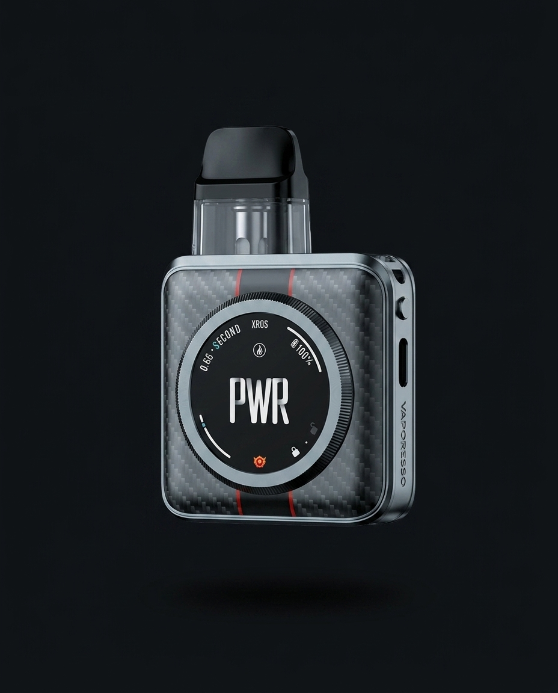
Najmniejszy wariant linii XROS 5 — kieszonkowy, dyskretny, do noszenia przy sobie cały dzień.
Pod · MTL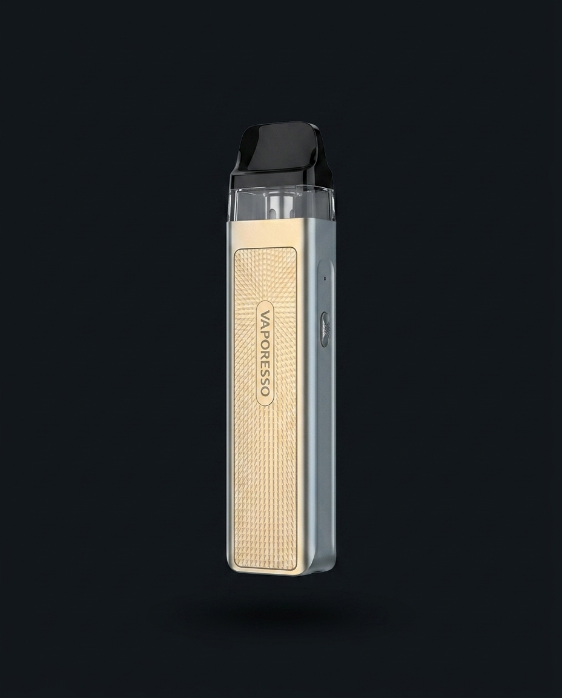
Nowsza generacja linii XROS w kompaktowym rozmiarze — ta sama filozofia, kilka usprawnień pod maską.
Pod · MTL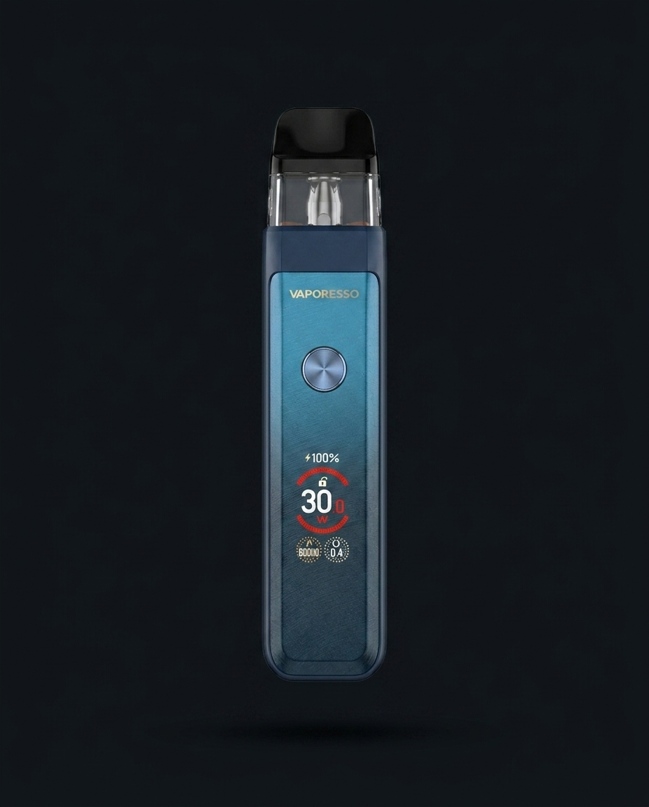
Wersja z wyświetlaczem i regulacją mocy — dla kogoś, kto chce mieć kontrolę nad zaciągnięciem.
Pod · MTL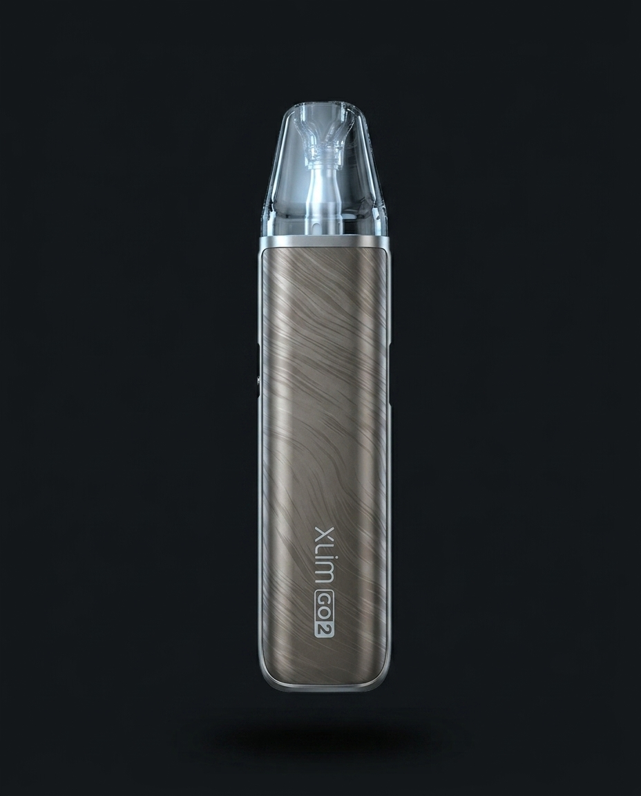
Prosty w obsłudze pod bez przycisków — włącza się zaciągnięciem. Dobry wybór na pierwszy dzień.
Pod · MTL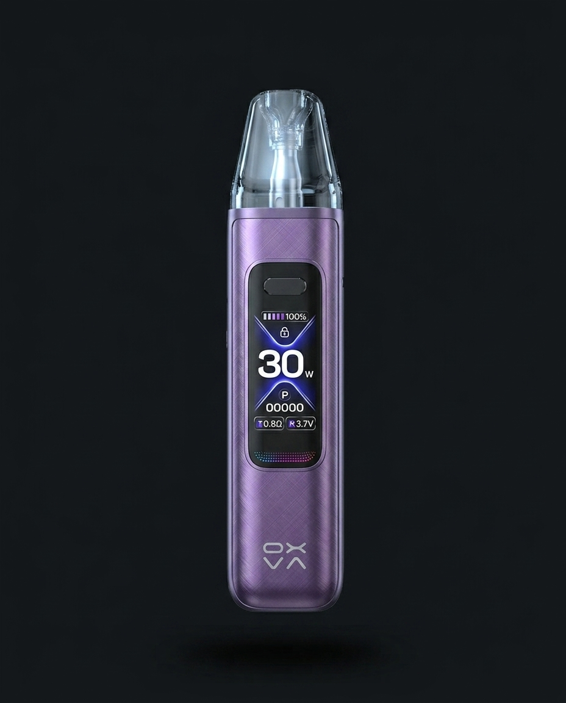
Wariant z regulacją mocy i wymiennymi cewkami — dla osoby, która chce dostroić zaciąg pod siebie.
Pod · MTL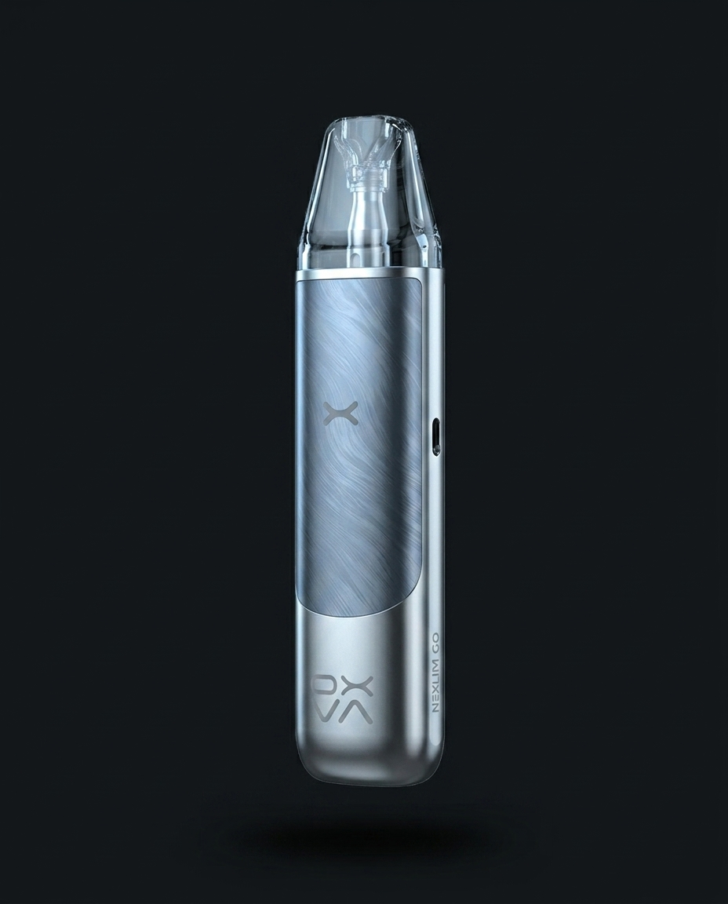
Nowsza linia OXVA obok rodziny XLIM — kompaktowa obudowa, tak samo prosta obsługa.
Pod · MTL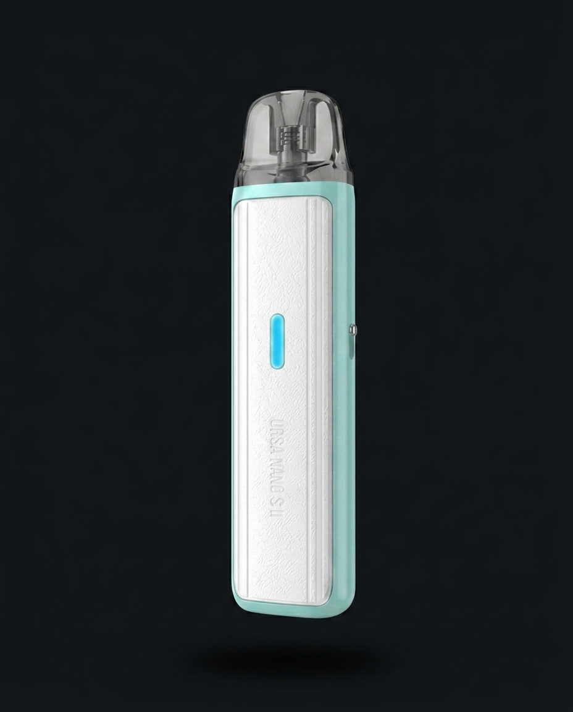
Staranne wykończenie i kompaktowy rozmiar — najczęściej polecany model dla osób ceniących wygląd.
Pod · MTL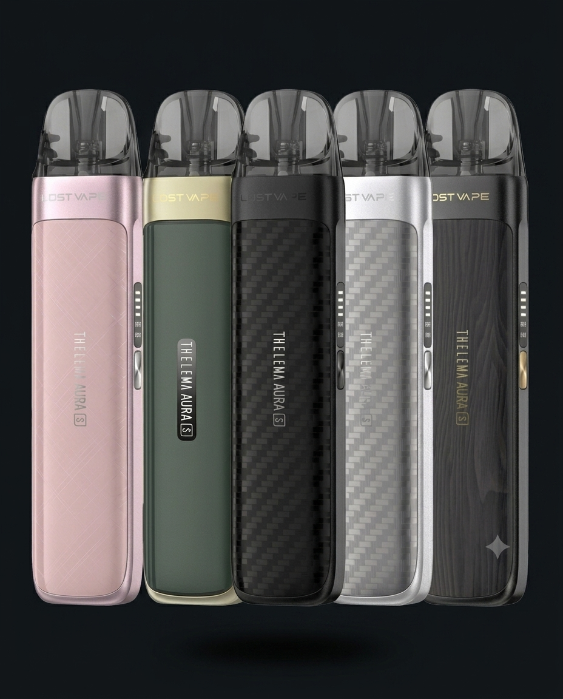
Zaawansowany pod mod z wyświetlaczem i regulacją mocy — dla kogoś, kto wychodzi poza podstawowy MTL.
Pod mod · MTL/DTL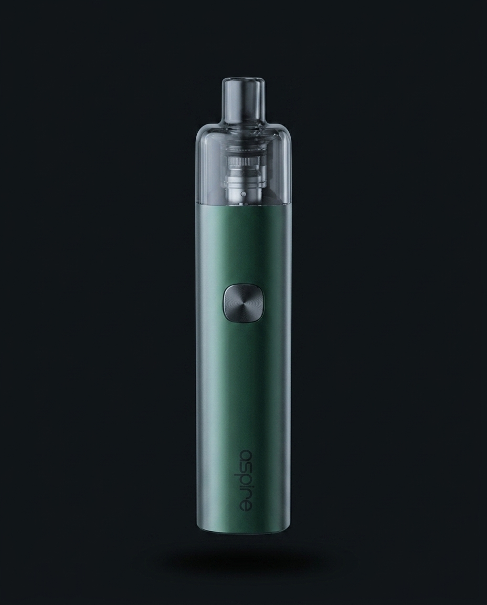
Charakterystyczna kwadratowa obudowa, kompaktowy i lekki — dobrze leży w dłoni.
Pod · MTL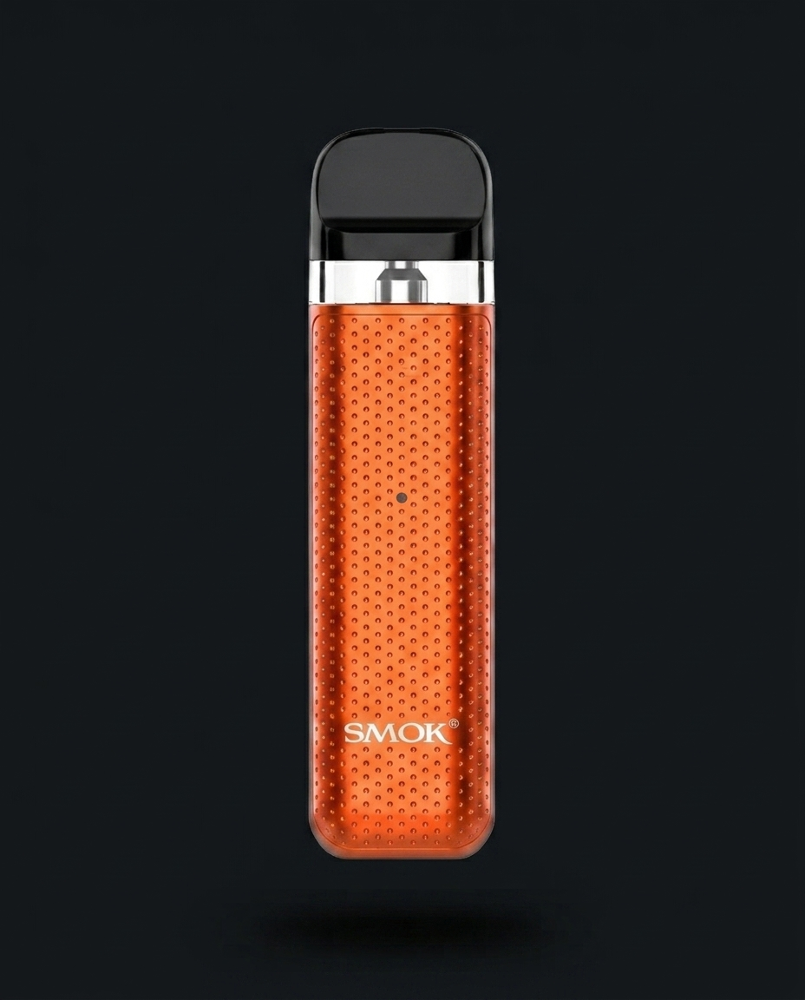
Kolejna odsłona popularnej linii Novo — sprawdzony kształt, prosta wymiana kartridża.
Pod · MTLKompletny e-papieros gotowy do napełnienia liquidem lub solą po pierwszym naładowaniu.
Nie trzeba niczego montować przy pierwszym uruchomieniu — grzałka siedzi już w podzie.
Do pierwszego i każdego kolejnego ładowania. Ładowarkę ścienną dobierzesz z dowolnego gniazda USB.
Przy pierwszym zakupie pokazujemy technikę e-palenia na miejscu — to nie jest coś, czego uczy się z pudełka.
Dwanaście modeli to dużo do przeglądania samodzielnie. W praktyce dobór sprowadza się do kilku pytań: ile palisz dziennie, czy zależy Ci na najmniejszym rozmiarze, czy wolisz prostotę bez przycisków, czy chcesz mieć regulację mocy. Odpowiedzi dają jeden, może dwa modele do wyboru.
Pełny tok tego doboru — bateria, grzałka, moc liquidu, styl zaciągania — opisujemy na stronie Dobór sprzętu.
Masz już konkretny model na oku? Zadzwoń i sprawdź dostępność od ręki — 22 839 86 33.
Dla osoby przechodzącej z tradycyjnych papierosów najczęściej polecamy: Vaporesso XROS 5, OXVA XLIM GO 2 lub Lost Vape Ursa Nano. To pody MTL z grzałkami 0,8–1,2 Ω, które w parze z solą nikotynową 20 mg dają zaciąg najbliższy tradycyjnemu papierosowi.
Vaporesso, OXVA, Lost Vape, SMOK i Aspire. Do każdej marki, którą polecamy, zapewniamy długoterminową dostępność grzałek i kartridży — to jeden z warunków, zanim model trafi na półkę.
Warianty nano i mini mają mniejszą baterię i mieszczą się w dłoni lub kieszeni, kosztem rzadszego ładowania. Modele standardowe i pro mają większą baterię, a część z nich — wyświetlacz i regulację mocy.
Urządzenie z podem, fabrycznie zamontowana grzałka, kabel USB-C i instrukcja. Przy pierwszym zakupie dodajemy krótkie szkolenie z techniki e-palenia na miejscu.
Tak. Oferta obejmuje całą gamę cenową — od prostych, kompaktowych podów po modele z wyświetlaczem i regulacją mocy. Dobieramy zestaw do potrzeb i budżetu w rozmowie przy ladzie.
Tak, to standardowa część konsultacji. Moc liquidu lub soli nikotynowej dobieramy razem z urządzeniem — jedno bez drugiego rzadko działa dobrze. Zobacz też liquidy i sole nikotynowe.
Tak. Wszystkie zestawy z tej strony są dostępne od ręki w sklepie stacjonarnym Asumpt przy Pl. Wilsona 4 w Warszawie, na Żoliborzu, tuż przy wyjściu ze stacji metra Plac Wilsona. Oferta dotyczy wyłącznie sklepu stacjonarnego.
Po wyborze zestawu
Moc nikotyny i smak dobieramy razem z urządzeniem — klasyczny liquid 6–18 mg albo gładsza sól 20 mg do podów MTL.